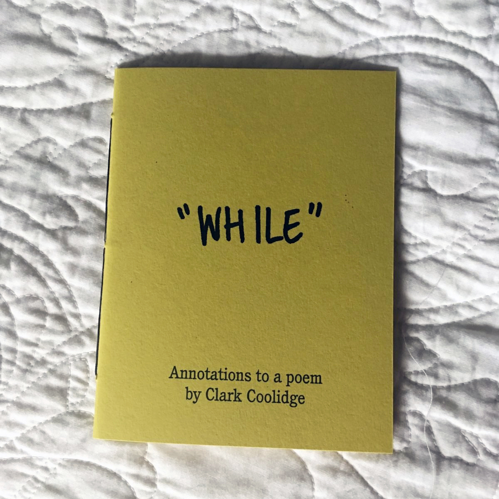
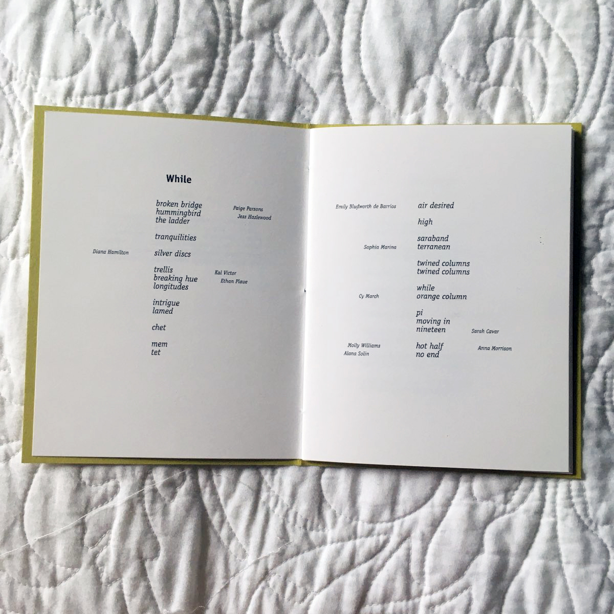
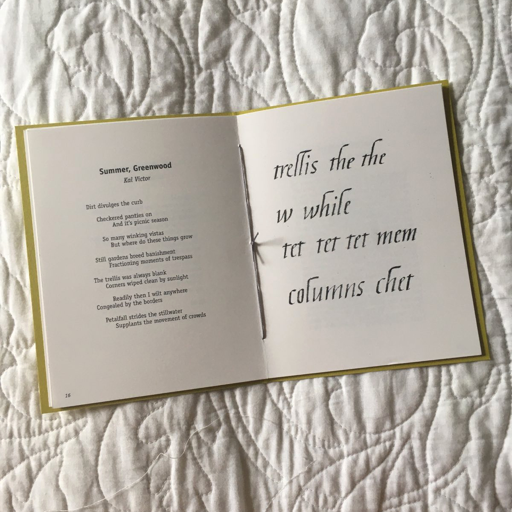
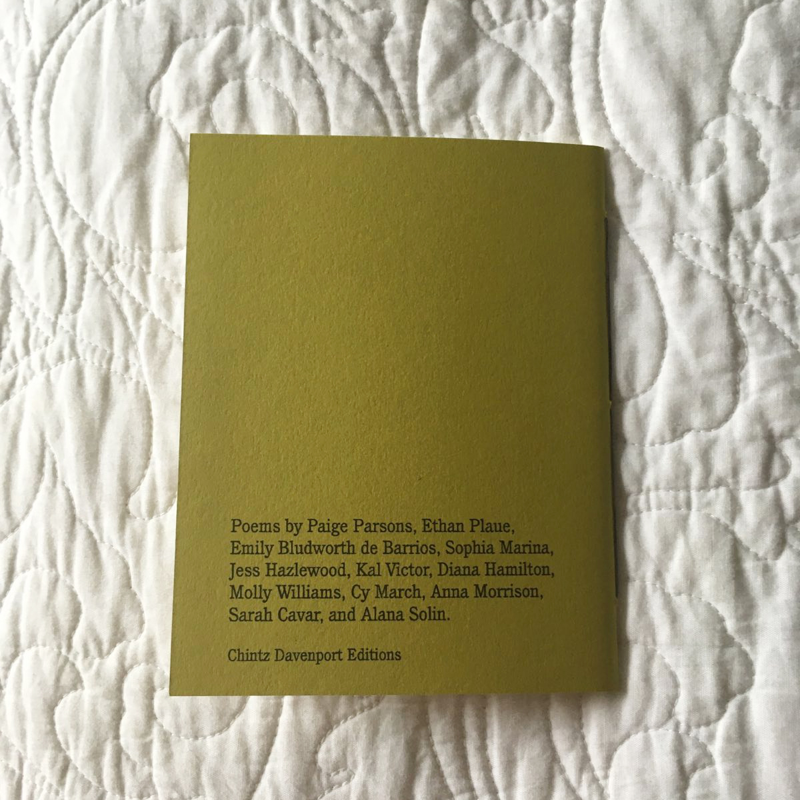

Annotations asks poets to respond to a passage or poem with a work of their own. Issue 1 took as its source the poem "While" by Clark Coolidge. Issue 2, forthcoming in fall 2022, utilizes a passage from Will Alexander's Across the Vapour Gulf. Submissions for Issue 3 will open towards the end of the year.
   